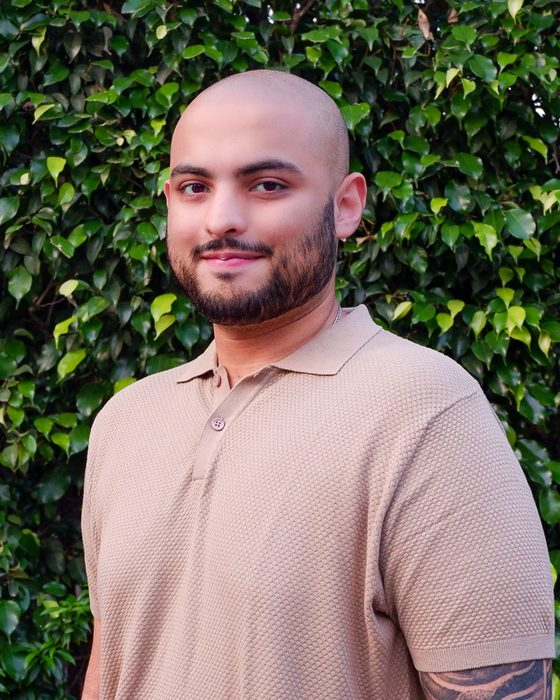
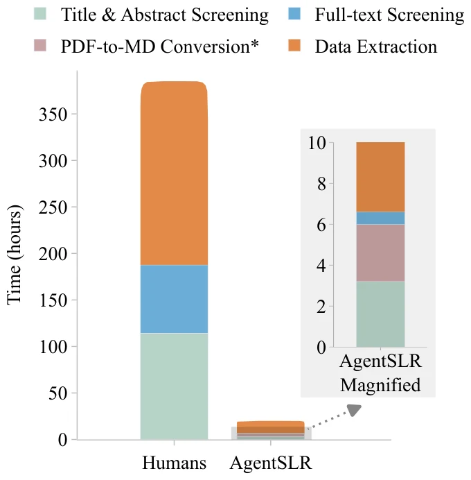
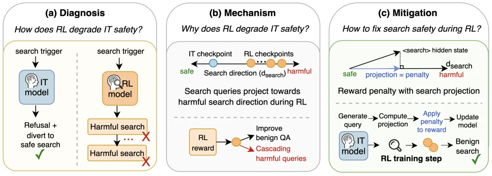
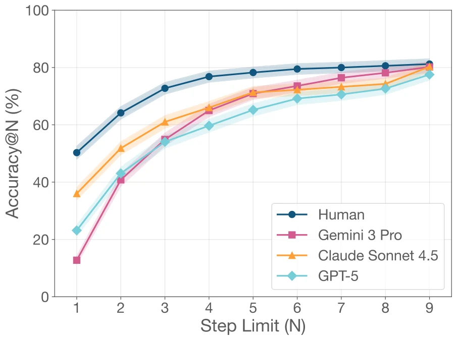
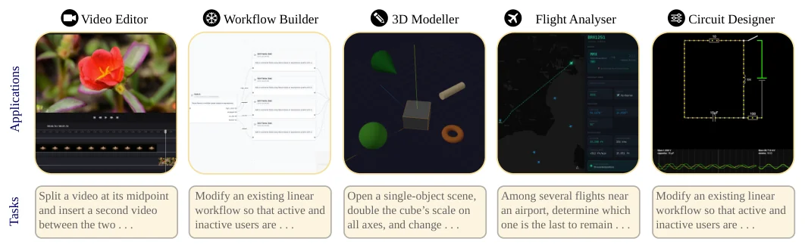
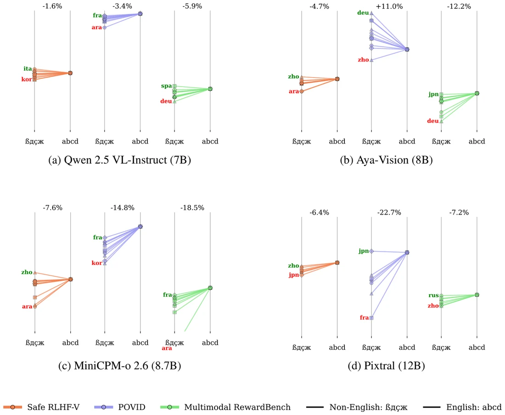
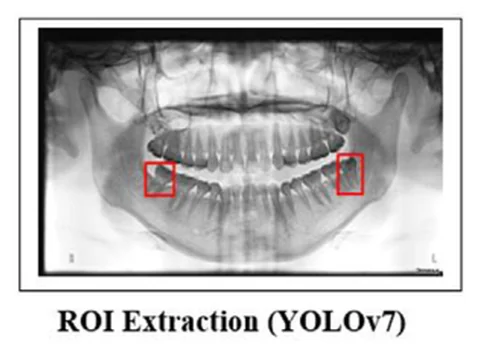

Shreyansh Padarha
PhD Researcher · University of Oxford
I'm a PhD researcher at the University of Oxford, based in the Reasoning with Machines Lab (OxRML) and supervised by Prof. Adam Mahdi. I'm interested in building, and better understanding, safer paradigms for automated scientific research. AI agents can now search the literature, write code and run experiments; I want to work out which parts of research we can hand over to them, and how to check what they produce.
To get there, I work on LLM evaluations, post-training and AI safety, often with multimodal and agentic systems. My research has featured at AI venues such as ICML (oral), NeurIPS and EMNLP. Most recently, I led AgentSLR, an open harness that tests whether LLMs can carry out systematic reviews in epidemiology, built with epidemiologists at Imperial College London.
Before my PhD, I completed an MSc at Oxford with Distinction, studied data science at CHRIST University in India, and built applied machine learning systems, from spotting impacted wisdom teeth in dental X-rays to identifying cattle breeds from phone photos.

Research
My research asks how far we can trust AI systems that do science, and how to make them more trustworthy. At OxRML, I build evaluations and harnesses that test models on long, realistic research tasks, and study how post-training changes the way they behave. Some questions I'm currently thinking about:
- Open tools for researchers. Closed models can refuse legitimate work or change without notice. I want to build plug-and-play harnesses that let researchers use open-weight models with confidence.
- Integrity at scale. Research is increasingly split across many agents, some of which learn to game their graders or tamper with their own logs. I want tests that catch this before flawed results reach the scientific record.
- Diversity of ideas. Models from different developers often give strikingly similar answers. If thousands of agents share one way of thinking, automated research may explore fewer ideas, not more. I want to measure this narrowing, and find ways to widen it.
- Safe self-improvement. Training a model on one narrow skill can erode its safety elsewhere; we saw this with search agents. I want to test whether one agent can train another to get better at a task without that erosion.
Selected publications
* equal contribution. Full list on Google Scholar.
-
NeurIPS 2026
Evaluating AI-based Scientific Knowledge Synthesis with Epidemiological Systematic Reviews
Summary

AgentSLR runs each stage of a systematic review with an LLM and scores every stage separately. Systematic reviews are how science takes stock of what it knows: experts screen thousands of articles and extract the numbers that go on to shape public-health decisions. We wanted to know whether LLMs can do this work. With epidemiologists at Imperial College London, we built AgentSLR, an open harness that runs every stage of an epidemiological review with an LLM, alongside an expert-annotated dataset of 16,248 articles from reviews of WHO priority pathogens.
No single frontier model won every stage. Structured data extraction was the clear bottleneck, with no model averaging above 0.67 field-level F1, and price was a poor guide to quality: GPT-5.2 cost over 96× more than gpt-oss-120b for slightly lower performance. With gpt-oss-120b, the full pipeline took about 20 hours, against roughly 385 hours for a manual review. Some closed models refused outright to process legitimate studies of these pathogens, which makes a strong case for open, locally reproducible tools. The models are useful, but not yet ready to run without expert supervision.
-
EMNLP 2026
Agentic Reinforcement Learning for Search Misaligns Instruction-Tuning
Summary

Diagnosing, explaining and fixing the safety loss from agentic RL for search. Agentic reinforcement learning teaches instruction-tuned models to use tools such as search. We asked what this does to their safety. At first glance, RL-trained search models look fine: they inherit refusals by turning harmful requests into harmless queries. But a simple trigger that makes the model search before it can refuse breaks this, and the models go on to run chains of harmful searches. Search safety falls by up to 68.6% for Qwen and 69.6% for Llama relative to their instruction-tuned counterparts, across model families, sizes and RL algorithms.
Looking inside the models, we found a linear “search direction” in the residual stream that controls query safety, and RL training steadily pushes queries towards its harmful end. Penalising movement along this direction during RL restores instruction-tuned levels of safety within 200 training steps, with no loss in QA accuracy, no extra data and about 0.3% extra compute.
-
ICML 2026Oral · Top 0.5%
Strategic Navigation or Stochastic Search? How Agents and Humans Reason Over Document Collections
Paper Code Dataset Leaderboard
Summary

Accuracy as the step budget grows. Humans answer 50% of questions correctly with their first query; Gemini 3 Pro starts at about 12% and catches up only by searching more. Multimodal agents are increasingly used to answer questions over large collections of real documents. But do they plan their way to an answer, or search until something sticks? We built MADQA, a benchmark of 2,250 human-written questions over 800 varied PDFs, designed using Classical Test Theory to separate stronger agents from weaker ones, together with an evaluation protocol that weighs accuracy against effort.
The best agents match human searchers on raw accuracy, but they get different questions right and rely on brute-force search to make up for weak planning. They also stall almost 20% short of oracle performance, often stuck in unproductive loops. We released the dataset and harness to help push agents towards calibrated, efficient reasoning.
-
Preprint 2026
Running the Gauntlet: Challenging Agentic Tasks
Summary

The five applications in GauntletBench, each with an example task. Most agent benchmarks are built on familiar apps such as shopping sites and booking forms, and frontier agents are close to saturating them. GauntletBench instead puts agents into five less familiar professional web apps (a video editor, a workflow builder, a 3D modeller, a flight analyser and a circuit designer), with 135 vision-heavy tasks that test temporal perception, graphical understanding and 3D reasoning.
When we released it in June 2026, the best agent completed 28.2% of tasks, while non-expert humans completed over 80%. Three months later, GPT-6 Astra scored 83.0%, the first agent to beat the human baseline. It's a reminder of how quickly benchmarks go stale, and we're now working on a harder version.
-
NeurIPS 2025 Workshop
Evaluating LLM-as-a-Judge under Multilingual, Multimodal and Multi-domain Constraints
Summary

How PolyVis is built, with a sample safety item translated from English to Arabic. LLMs are now routinely used as judges and reward models during post-training, but they had not been tested in settings that are both multilingual and multimodal. We built PolyVis, which extends vision-language preference data to 12 languages across three objectives: spotting hallucinations, judging reasoning and instruction following, and judging safety. We used it to evaluate four open-source judge models.
How good a judge is depends on the combination of model, language and task. Hallucination detection was the easiest (up to 95.2% accuracy), while reasoning judgements hovered near chance. The model best at judging safety was the worst at spotting hallucinations, and some non-English languages matched or beat English. One-size-fits-all judge evaluations hide these differences.
-
J. Oral Med. Oral Surg. 2025
Fully Automated Deep Learning Framework for Detection and Classification of Impacted Mandibular Third Molars in Panoramic Radiographs
Summary

The pipeline, from raw panoramic X-ray to Winter's classification. Impacted wisdom teeth are one of the most common reasons for minor oral surgery, and planning an extraction depends on reading the tooth's position from a panoramic X-ray. Working with clinicians in Malaysia and the Philippines, we built a fully automated pipeline for this: a VGG16-based model detects the mandibular third molar, YOLOv7 locates it, and a ResNet50 model classifies how it is impacted using Winter's classification.
Trained on around 1,800 radiographs with annotations validated by an oral radiologist, the detection model reached 93.5% test accuracy and the classifier 92.2% (AUC 98.3). The system is now used by dental schools.
Experience
-
Sep 2025 – Sep 2026
Research Assistant · Oxford Internet Institute, University of Oxford
With Prof. Scott Hale and Prof. Adam Mahdi on UKRI (EPSRC)-funded research into how news outlets across the British political spectrum discuss migration, alongside LLM evaluation projects on safety, multimodality and agents.
-
May – Jul 2025
Research Assistant (part-time) · Oxford Internet Institute, University of Oxford
With Dr Fabian Braesemann on the Science of Startups Initiative, building the technical stack for a new website on founder personalities.
-
Jan – May 2024
Researcher · Asia Pacific University of Technology & Innovation, Kuala Lumpur
With Dr V. Sivakumar and clinicians in Malaysia and the Philippines, developed a deep learning framework that finds impacted wisdom teeth and related pathologies in panoramic X-rays.
-
Jun – Sep 2023
AI Engineer · Anantadi Tech, Pune
Led a team of interns building an AI-powered tool for in-video advertising and product placement, developing computer vision models for object detection, segmentation and tracking.
-
Jul – Aug 2022
Automation Engineer · Elecsol Technology, Raipur
Worked on industrial automation systems (PLCs and drives) and built an IoT dashboard for real-time monitoring of legacy equipment.
About me
Download CV (PDF)I came to AI research through data science, and through applied machine learning projects in healthcare, agriculture and industry. Each one taught me that a technical result is only useful if the people relying on it can trust it, and that idea still drives my research.
Education
-
2026 – present
DPhil · University of Oxford
Oxford Internet Institute and Wadham College. LLM evaluations and post-training for AI in science.
-
2024 – 2025
MSc Social Data Science · University of Oxford
Distinction (73%, top 5% of the cohort).
-
2021 – 2024
BSc Data Science · CHRIST University, India
GPA 3.93/4.0. Ranked first in my year and awarded the department gold medal.
Grants & awards
-
2026 – present
ESRC Grand Union Doctoral Training Partnership
Fully funded DPhil studentship from the Economic and Social Research Council.
-
2025 – present
EPSRC (UKRI) and Dieter Schwarz Foundation
Grant funding supporting my research at the Oxford Internet Institute.
-
2022 – 2024
Merit and Extra-Curricular Scholarships · CHRIST University
Awarded in both 2022–23 and 2023–24.
Teaching
-
2026 – 2027
Teaching Assistant · Oxford Internet Institute, University of Oxford
Applied Machine Learning with LLMs. Designed and ran tutorials for a postgraduate cohort of 40 in Hilary Term 2026, and returning in Hilary Term 2027.
-
2025
Tutor · Stanford University (Stanford House, Oxford)
Taught LLM pre-training and post-training to Stanford computer science undergraduates on their semester abroad in Oxford.
Outside research
I enjoy teaching and mentoring, which often teaches me as much as it does my students. I've also spent a lot of time in student bodies: I was President of the Data Science Association and a member of the University Student Council at CHRIST, and a cohort representative during my MSc. In 2023, I was Technical Lead with the India Meteorological Department (IMD) on the National Framework for Climate Services (NFCS-India).
I'm always happy to talk about research, so feel free to get in touch.